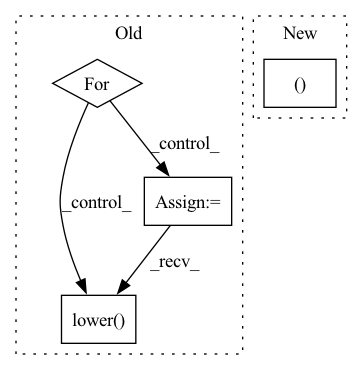

Pattern ID :10579
Before Change
def generate(self, batch_data, eval_dataloader):
generate_corpus = []
source_text = batch_data["source_text"]
for text in source_text:
sentence = " ".join(text)
encoding_dict = self.tokenizer(sentence, return_tensors="pt")
input_ids = encoding_dict["input_ids"].to(self.device)
sample_outputs = self.decoder.generate(
input_ids, num_beams=5, max_length=self.max_target_length, early_stopping=True
)
generated_text = self.tokenizer.decode(sample_outputs[0], skip_special_tokens=True)
generate_corpus.append(generated_text.lower() .split())
return generate_corpus
def forward(self, corpus, epoch_idx=-1):After Change
def generate(self, batch_data, eval_data):
source_text = batch_data["source_text"]
input_ids, attn_masks = self.tokenize_text(source_text)
sample_outputs = self.model.generate(
input_ids, attention_mask=attn_masks, num_beams=5, max_length=self.max_target_length, early_stopping=TrueIn pattern: SUPERPATTERN
Frequency: 3
Non-data size: 4
Instances Fragment ID: 36854979
Project Name: rucaibox/textbox
Commit Name: 47a1a3dc1eee71dd585124dbf1786e2508d34561
Time: 2021-04-15
Author: 1020139164@qq.com
File Name: textbox/model/Seq2Seq/bart.py
M Class Name: BART
N Class Name: BART
M Method Name: generate(3)
N Method Name: generate(3)
M Parent Class: Seq2SeqGenerator
N Parent Class: Seq2SeqGenerator
M File Name: textbox/model/Seq2Seq/bart.py
N File Name: textbox/model/Seq2Seq/bart.py
M Start Line: 43
M End Line: 54
N Start Line: 41
N End Line: 48
Before Change
def generate(self, batch_data, eval_dataloader):
generate_corpus = []
source_text = batch_data["source_text"]
for text in source_text:
sentence = " ".join(text)
encoding_dict = self.tokenizer(sentence, return_tensors="pt")
input_ids = encoding_dict["input_ids"].to(self.device)
sample_outputs = self.decoder.generate(
input_ids, num_beams=5, max_length=self.max_target_length, early_stopping=True
)
generated_text = self.tokenizer.decode(sample_outputs[0], skip_special_tokens=True)
generate_corpus.append(generated_text.lower() .split())
return generate_corpus
def forward(self, corpus, epoch_idx=-1):After Change
def generate(self, batch_data, eval_data):
source_text = batch_data["source_text"]
input_ids, attn_masks = self.tokenize_text(source_text)
sample_outputs = self.model.generate(
input_ids, attention_mask=attn_masks, num_beams=5, max_length=self.max_target_length, early_stopping=True Fragment ID: 36854976
Project Name: rucaibox/textbox
Commit Name: 47a1a3dc1eee71dd585124dbf1786e2508d34561
Time: 2021-04-15
Author: 1020139164@qq.com
File Name: textbox/model/Seq2Seq/bart.py
M Class Name: BART
N Class Name: BART
M Method Name: generate(3)
N Method Name: generate(3)
M Parent Class: Seq2SeqGenerator
N Parent Class: Seq2SeqGenerator
M File Name: textbox/model/Seq2Seq/bart.py
N File Name: textbox/model/Seq2Seq/bart.py
M Start Line: 43
M End Line: 54
N Start Line: 41
N End Line: 48
Before Change
for k in cls._STREAM_KEYS:
if k in d:
stream = d[k]
for attr_type, attrs in attributes_dict.items():
for attr in attrs:
name = attr["name"]
val = attr["val"]
if name.lower() in cls._STREAM_KEYS:
stream = val
if name.lower() not in _ignore_keys:
attributes[name] = val
return attributes, streamAfter Change
if k in d:
stream = d[k]
_attrs, _stream = cls._parse_name_val_attributes(attributes_dict)
attributes.update(_attrs)
if _stream:
stream = _stream Fragment ID: 36854977
Project Name: voxel51/fiftyone
Commit Name: 1f7ec540ef403ea1575e101ab1877b79cf3229f6
Time: 2022-05-24
Author: ehofesmann@gmail.com
File Name: fiftyone/utils/openlabel.py
M Class Name: AttributeParser
N Class Name: AttributeParser
M Method Name: _parse_attributes(2)
N Method Name: _parse_attributes(2)
M Parent Class: object
N Parent Class: object
M File Name: fiftyone/utils/openlabel.py
N File Name: fiftyone/utils/openlabel.py
M Start Line: 928
M End Line: 954
N Start Line: 938
N End Line: 950
Before Change
def generate(self, batch_data, eval_data):
generate_corpus = []
source_text = batch_data["source_text"]
for text in source_text:
text = " ".join(text)
encoding_dict = self.tokenizer(text, return_tensors="pt")
input_ids = encoding_dict["input_ids"].to(self.device)
output_ids = self.model.generate(input_ids, max_length=self.max_target_length, early_stopping=True)
generate_text = self.tokenizer.decode(output_ids[0], skip_special_tokens=True)
generate_corpus.append(generate_text.lower() .split())
return generate_corpus
After Change
def generate(self, batch_data, eval_data):
source_text = batch_data["source_text"]
input_ids, attn_masks = self.tokenize_text(source_text)
sample_outputs = self.model.generate(
input_ids, attention_mask=attn_masks, num_beams=5, max_length=self.max_target_length, early_stopping=True Fragment ID: 36854983
Project Name: rucaibox/textbox
Commit Name: 47a1a3dc1eee71dd585124dbf1786e2508d34561
Time: 2021-04-15
Author: 1020139164@qq.com
File Name: textbox/model/Seq2Seq/prophetnet.py
M Class Name: ProphetNet
N Class Name: ProphetNet
M Method Name: generate(3)
N Method Name: generate(3)
M Parent Class: Seq2SeqGenerator
N Parent Class: Seq2SeqGenerator
M File Name: textbox/model/Seq2Seq/prophetnet.py
N File Name: textbox/model/Seq2Seq/prophetnet.py
M Start Line: 38
M End Line: 50
N Start Line: 38
N End Line: 45